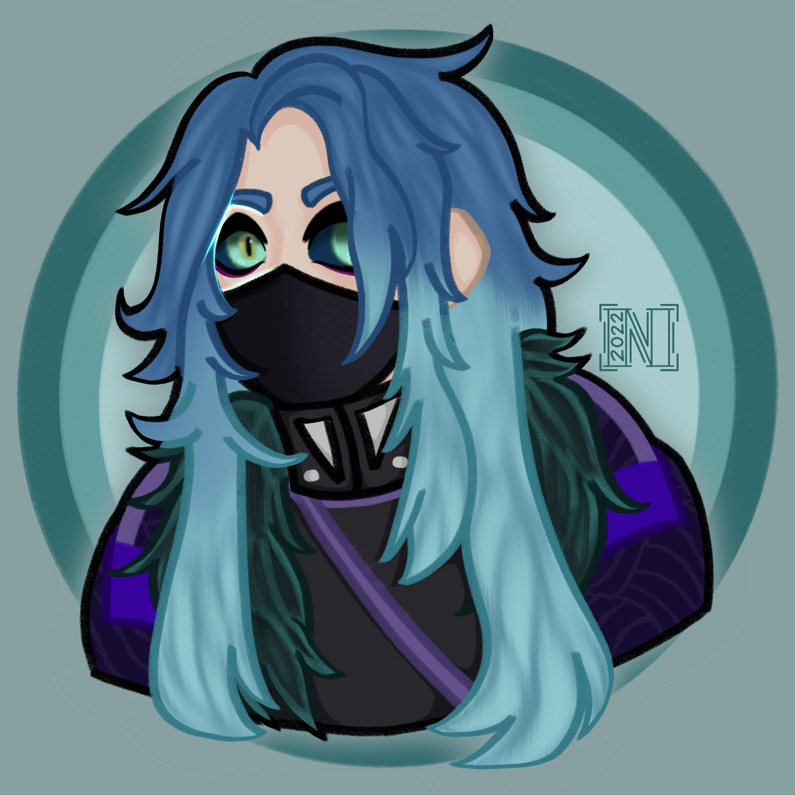

Sage was a Drace who was captured by the government and experimented on. Forced to have illusionary abilities, these backfired on him and he regularly deals with hallucinations created from his own abilities. He fled to the Greater Wastes, where he doesn't have to deal with people, and only the monsters there.
He never talks. Even when coming across a traveler, he stays silent and avoids contact as much as he can. Seeming like a hermit, he does this to protect others should his hallucinations decide an innocent person is a threat.